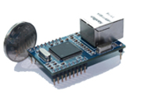

HLK-WIFI-M04全功能型快速WIFI转串口模块
支持基础网、自组网、AP模式三种工作模式，支持苹果、安卓等多种系统，串口透明传输
具有TCP Server,TCP Client, UDP, Real COM ,Group组播,TCP Auto等多种工作模式
|
|
HLK-WIFI-M04全功能型快速WIFI转串口模块 支持基础网、自组网、AP模式三种工作模式，支持苹果、安卓等多种系统，串口透明传输 |
 |
HLK-S2E-2M01标准型以太网转串口设备 具有TCP Server,TCP Client, UDP, Real COM ,Group组播,TCP Auto等多种工作模式 |
更多产品... |